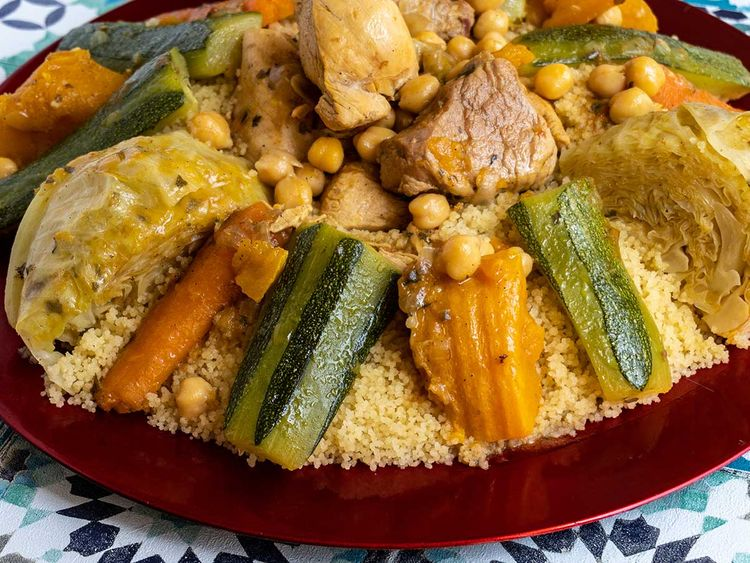

Moroccan Couscous

Introduction:
The Moroccan Couscous is the most oldest food of the moroccan people.
at every Friday the moroccan couscous is a main dish in their lunch.
You want to make it in your home? Just follow the instructions bellow.
Prep: 30 mins
Cook: 2 hrs
Total: 2 hrs 30 mins
Servings: 6 servings
Ingredients:
For the Meat:
1 kilogram (about 2 1/4 pounds) bone-in lamb or beef,
cut into large pieces, or 1 whole chicken
1 large onion, coarsely chopped
3 medium tomatoes, peeled and coarsely chopped
1/4 cup vegetable oil
1 1/2 tablespoon salt
1 tablespoon freshly ground black pepper
2 teaspoons ground ginger
1/4 teaspoon ground
turmeric, or 1/4 teaspoon Moroccan yellow colorant
2 1/2 liters (about 2 1/2 quarts) water
1 handful fresh parsley and cilantro sprigs, tied into a bouquet
1/4 cup dry
chickpeas, soaked overnight
For the Couscous:
1 kilogram (about 2 1/4 pounds) dry couscous (not instant)
60 milliliters (about 1/4 cup) vegetable oil
Water, as needed
1 tablespoon salt
2 tablespoons unsalted butter
For the Vegetables:
1/2 small
cabbage, cut into 2 or 3 wedges
3 to 4 medium turnips, peeled and halved crosswise
10 medium carrots, peeled and halved
1 to 2 medium tomatoes, peeled and quartered
2 small onions, whole or halved
1/2 cup fresh
fava beans, optional
1 to 2 jalapeño or chili peppers, optional
1 small acorn squash, quartered, or a small pumpkin cut into 3-inch pieces
4 to 5 small zucchini, ends removed and halved
2 to 3 small
sweet potatoes, peeled and halved, optional
Steps to Make it:
Make the Meat:
- Gather the ingredients.
- Mix the meat, onion, tomatoes, oil, and spices in the bottom of a couscoussier.
Cook uncovered over medium to medium-high heat,
stirring occasionally, for about 15 minutes, or until the meat is browned and
the onions and tomatoes have formed a thick sauce.
- Add the water, the parsley/cilantro bouquet, and the chickpeas, if using. Cover,
and bring to a boil over high heat.
Reduce the heat to medium, and simmer rapidly for 25 to 30 minutes.
(If omitting both meat and chickpeas, simmer for just a few minutes.)
---------------------------------------------------------------------------------
First Steaming of Couscous:
- Gather the ingredients.
- While the meat is cooking, get the couscous ready for its first steaming.
Oil the steamer basket and set it aside.
Empty the dry couscous into a very large bowl, and work in the vegetable
oil with your hands, tossing the couscous and rubbing it between your palms.
(This will help prevent the couscous grains from clumping together.)
- Work in 1 cup of water in the same manner, using your hands to evenly
distribute the liquid into the couscous.
Transfer the couscous to the oiled steamer basket.
- Add the cabbage to the meat mixture, and place the steamer basket
on top (seal the joint if necessary).
Once you see steam rising from the couscous, steam the couscous for 15 minutes.
- Pour the couscous back into the large bowl and break it apart.
- When the couscous has cooled enough to handle, gradually work in 2 cups of water
and 1 tablespoon of salt with your hands.
Again, toss the couscous and rub it between your palms to break up any balls or clumps.
Transfer the couscous back into the steamer,
taking care not to pack or compress the couscous.
---------------------------------------------------------------------------------
Second Steaming of Couscous:
- Gather the ingredients.
- Add the turnips, carrots, tomatoes, onions, and fava beans (if using) to the pot.
Place the steamer basket on top of the couscoussier (seal the joint if necessary),
and steam the couscous a second time for 15 minutes,
timing from when you see the steam rising from the couscous.
- Once the couscous has steamed for 15 to 20 minutes, turn it out into the large bowl again.
Break it apart, and let cool a few minutes.
- If you're serving the couscous with jalapeño peppers, simmer the peppers,
covered, in a half-ladle of broth and a little water, for about 40 minutes,
or until the jalapeños are tender. (The peppers are typically placed on top of the couscous,
and small pieces may be broken off as a condiment.)
---------------------------------------------------------------------------------
Third Steaming of Couscous:
- Gather the ingredients.
- Gradually work 3 cups of water into the couscous with your hands,
tossing it and rubbing the grains between your palms.
Taste the couscous, and add a little salt if desired.
- Transfer about half of the couscous to the steamer basket. Again,
try to handle the couscous lightly and avoid packing it into the steamer.
- Add the squash, zucchini, and sweet potatoes, if using, to the couscoussier,
and place the steamer basket on top. (Again, seal the joint if necessary.)
- When you see the steam rise through the couscous, carefully add the remaining couscous to the steamer.
Continue cooking, watching for the steam to rise from the couscous. Allow the couscous to steam for a full 15 to 20 minutes.
At this point, all of the vegetables should be cooked. Test the vegetables to be sure, cooking longer if necessary.
Taste the broth—it should be salty and peppery—and adjust the seasoning if desired.
---------------------------------------------------------------------------------
Serving the Couscous and Vegetables:
- Empty the couscous into the large bowl, and break it apart.
Mix in the 2 tablespoons of butter with 2 ladles of
broth.
- To serve the couscous, shape it into a mound with a well in the center. Put the meat into the well,
and arrange the vegetables on top and all around.
Distribute the broth evenly over the couscous and vegetables, reserving one or two bowlfuls to
offer on the side for those who prefer more.
---------------------------------------------------------------------------------
Tip:
If you see steam escaping from between the basket and couscoussier, you'll need to seal the joint.
You can do this in several ways: wrap and tie a long piece of a damp cloth over the joint,
tightly wrap a long piece of kitchen plastic film around the joint,
or wrap and drape a long piece of kitchen plastic film onto the rim of the couscoussier,
and then place the basket on top.